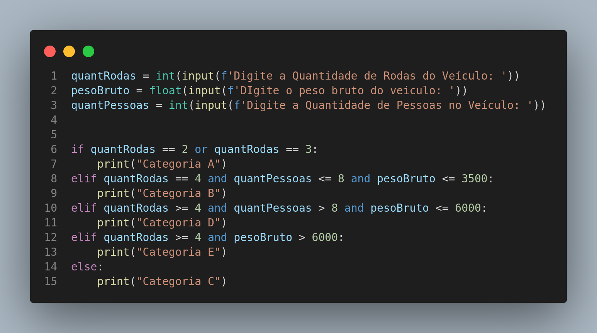

Instruções do projeto - Introdução a Programação
Atividade 02 - Categoria de habilitação
Nome: Jonathan P P Maia
Desenvolva um código que utilize as seguintes características de um veículo:
- Quantidade de rodas;
- Peso bruto em quilogramas;
- Quantidade de pessoas no veículo.
Com essas informações, o programa mostrará qual é a melhor categoria de habilitação para o veículo informado a partir das condições:
A: Veículos com duas ou três rodas;
B: Veículos com quatro rodas, que acomodam até oito pessoas e seu peso é de até 3500 kg;
C: Veículos com quatro rodas ou mais e com peso entre 3500 e 6000 kg;
D: Veículos com quatro rodas ou mais e que acomodam mais de oito pessoas; E: Veículos com quatro rodas ou mais e com mais de 6000 kg.
RESOLUÇÃO
